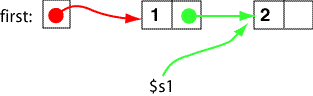
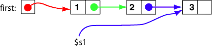

At the top of the loop, which is the current node? The first node.
At the bottom of the loop, which is the current node? The second node.
At the bottom of the loop, after the first iteration, the second node of the list looks just like the first node did at the top of the loop. Another iteration of the loop attaches the third node to the second node.
Linked List before the Loop

Linked List at bottom of first Loop Iteration

Linked List at bottom of second Loop Iteration

Of course, now the third node is the current node and has the same
relationship to its predecessor and to $s1 as did
the second node when it was the current node.
Look at the current node (the last one) in each diagram. What does a current node look like in general?